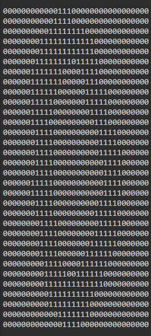
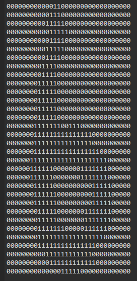
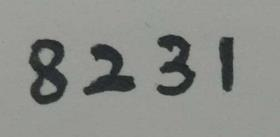
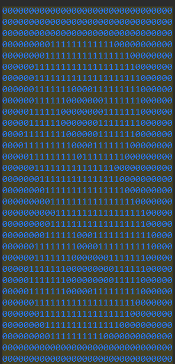
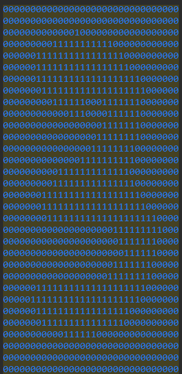
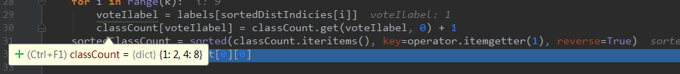

使用KNN手写识别
算法概述
K-近邻（KNN）是一个较为简单的机器学习有监督算法，简单来说训练数据都有标签（lable），则为有监督学习，如果数据没有标签，则为无监督学习。对于KNN算法，其一般流程如下：
- 计算已知类别数据集中的点与当前点之间的距离;
- 按照距离递增次序排序;
- 选取与当前点距离最小的k个点;
- 确定前k个点所在类别的出现频率;
- 返回前k个点出现频率最高的类别最为当前点的预测分类.
算法应用
为了简单，我们这里只进行简单的数字0~9的识别
我们已经得到已知类别的数据集合，对于每个类别的数据集合有约为200个样本，每个样本是用32X32的矩阵来表示，其中用1表写的痕迹，如图所示分别表示0和6。
 
在实际操作中为了便于计算距离，可将每个样本数据矩阵用img2vetor函数转化为一个1024长的向量。1
2
3
4
5
6
7
8def img2vector(filename):
returnVect = zeros((1, 1024))
fr = open(filename)
for i in range(32):
lineStr = fr.readline() #读取第i行
for j in range(32):
returnVect[0, 32 * i + j] = int(lineStr[j])
return returnVect接下来我们构造测试数据，就以我的手机号后四位数字8231为例，我写下如图的手写体数字

将图像RGB转换为灰度图后，采用如下函数可将图像数据转化为01矩阵或者向量1
2
3
4
5
6
7
8
9
10def blackWrite(img):
blackXY = zeros((1,1024))
# 遍历像素点
for x in range(32):
for y in range(32):
if img.getpixel((x,y))<128:
blackXY[0,32*y+x]=1 # 置为黑点
else:
blackXY[0,32*y+x] =0 # 置为白点
return blackXY
 
- 同样的对数据进行处理，形成与已知类别数据集合相同排列顺序的1X1024的01向量。计算每个测试数据与样本之间的距离,并选取距离最小的k个点
1
2
3
4
5
6
7
8
9
10
11
12
13
14def classify0(inX, dataSet, labels, k):
dataSetSize = dataSet.shape[0]
#计算距离
diffMat = tile(inX, (dataSetSize, 1)) - dataSet
sqDiffMat = diffMat ** 2
sqDistances = sqDiffMat.sum(axis=1)
distances = sqDistances ** 0.5
sortedDistIndicies = distances.argsort()
classCount = {}
for i in range(k):
voteIlabel = labels[sortedDistIndicies[i]] #选取k个距离最小的点
classCount[voteIlabel] = classCount.get(voteIlabel, 0) + 1
sortedClassCount = sorted(classCount.iteritems(), key=operator.itemgetter(1), reverse=True) #将出现的Labels个数排序
return sortedClassCount[0][0] #返回首位，即出现频率最高的类别值作为预测结果
完整代码
1 | #coding:utf-8 |
结果分析：
the classifier came back with: 1, the real answer is: 1
the classifier came back with: 4, the real answer is: 2
the classifier came back with: 3, the real answer is: 3
the classifier came back with: 8, the real answer is: 8
the total number of errors is: 1
the total error rate is: 0.250000
Process finished with exit code 0
还是存在一定的识别错误，原因是系统手写体4与我的手写体2比较相似，例如当k=10时，存在有2个识别为1，8个识别为4。T_T我的手写体2就那么难以被识别吗。。。
